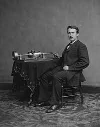
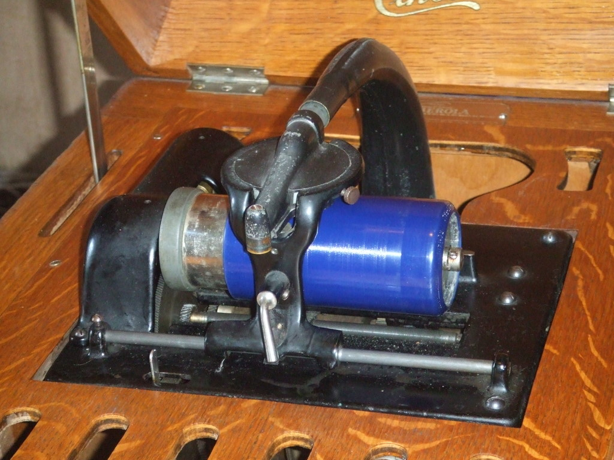

The Phonograph
A phonograph, in its later forms also called a gramophone (as a trademark since 1887, as a generic name in the UK since 1910) or since the 1940s called a record player, is a device for the mechanical recording and reproduction of sound. The sound vibration waveforms are recorded as corresponding physical deviations of a spiral groove engraved, etched, incised, or impressed into the surface of a rotating cylinder or disc, called a "record". To recreate the sound, the surface is similarly rotated while a playback stylus traces the groove and is therefore vibrated by it, very faintly reproducing the recorded sound. In early acoustic phonographs, the stylus vibrated a diaphragm which produced sound waves which were coupled to the open air through a flaring horn, or directly to the listener's ears through stethoscope-type earphones.

The phonograph was invented in 1877 by Thomas Edison. Alexander Graham Bell's Volta Laboratory made several improvements in the 1880s and introduced the graphophone, including the use of wax-coated cardboard cylinders and a cutting stylus that moved from side to side in a zigzag groove around the record. In the 1890s, Emile Berliner initiated the transition from phonograph cylinders to flat discs with a spiral groove running from the periphery to near the center, coining the term gramophone for disc record players, which is predominantly used in many languages. Later improvements through the years included modifications to the turntable and its drive system, the stylus or needle, and the sound and equalization systems.
The disc phonograph record was the dominant audio recording format throughout most of the 20th century. In the 1980s, phonograph use on a standard record player declined sharply due to the rise of the cassette tape, compact disc, and other digital recording formats. However, records are still a favorite format for some audiophiles, DJs, collectors, and turntablists (particularly in hip hop and electronic dance music), and have undergone a revival since the 2000s.